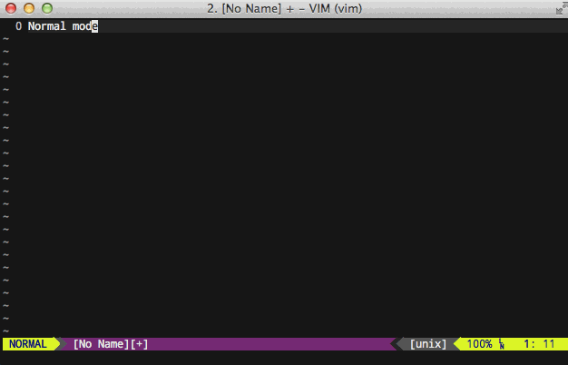

Why Vim?
- Cross platform
- Available everywhere
- Extremely lightweight
- Great plugin ecosystem
- Battle tested!
- Well documented
Vim is Charityware
- Users are encouraged to donate to needy children in Uganda
- Users can sponsor development of Vim, proceeds go to Uganda
- :help uganda
Vim History
- Written by Bram Moolenaar
- First released publicly in 1991 (22 years ago!)
- Originally released for the Amiga
- Voted most popular editor by Linux Journal readers in 2006
Vim Features
- Completion
- Comparison and merging of files (vimdiff)
- Extended regular expressions
- Various scripting language support (Perl, Python, Ruby, Tcl, Lua)
- Graphical user interface (gvim)
- Mouse interaction (with and without gui)
- Folding
- Editing of compressed or archived files in gzip, bzip2, zip, and tar formats
- Editing of files over network protocols such as SSH, FTP, HTTP
- Session state preservation
- Spell checking
- Split and tabbed windows
- Unicode and multi-language support
- Syntax highlighting
- Search and position cursor histories
Supported Platforms
- Atari MiNT
- BeOS
- DOS
- Microsoft Windows 95/98/Me/NT/2000/XP/Server 2003/Vista/Server 2008/7/8
- IBM OS/2 and OS/390
- MorphOS
- OpenVMS
- QNX
- RISC OS
- Unix
- Linux
- BSD
- Mac OS
- Android (independent port)
- iOS (independent port)
Installing Vim
Linux
|# CentOS/RPM based distro
|yum install vim-enhanced vim-common vim-minimal
|
|# Ubuntu/Debian
|apt-get install vim
Mac
|# Shipped with OSX _or_
|# install latest via Homebrew
|brew install vim
Windows
Download the Installer:
http://www.vim.org/download.php/#pc
Learning Vim
- Disable arrow keys!
- vimtutor
- :help
- Vim Casts
- Vim Adventures
- Muscle memory (it gets easier!)
- Other peoples vimrc configuration
Disable arrow keys
|" vimrc file
|nnoremap <up> <nop>
|nnoremap <down> <nop>
|nnoremap <left> <nop>
|nnoremap <right> <nop>
|inoremap <up> <nop>
|inoremap <down> <nop>
|inoremap <left> <nop>
|inoremap <right> <nop>
Starting from scratch
- Install Pathogen
- Install tpope/vim-sensible
- Don't verbatim copy others vimrc
Your first ~/.vimrc
|execute pathogen#infect()
|syntax on
|filetype plugin indent on
Modes
-
Normal
→ Navigating a file. Small changes.
-
Visual
→ Select blocks of text for copy/paste/manipulation.
-
Insert
→ Insert text at cursor.

Moving Around
Done in Normal/Visual mode
Character by character
The "h", "j", "k", and "l" commands to move the cursor left, down,
up, and right respectively.
Word movement
The "w" command moves the cursor forward one word. Use numeric prefixes
to modify the command. Move three words forward using "3w".
Line movement
The "$" command moves cursor to end of line. The "^" command moves
cursor to the first non-blank character of the line. The "0" command
moves the cursor to the very first character of the line.
Operators and motions
Combine operator with motion
"dw" to delete word
"d$" to delete to end of line
"cw" to change word
"c$" to change from cursor to end of line
Visual mode
Start visual mode with "v" or "V"
Pair with motions - "Vjj"
Delete "d" or "x"
Copy to clipboard
Vimrc
- Home of all your user-specific configuration
- Located in home folder with name '.vimrc'
- Checkout my dotfiles repo for mine
- Also checkout icholy dotfiles repo for his
Vim script (VimL)
- Used to extend Vim
- Fairly obscure
- Only a few people truly understand it (IMHO)
- :help usr_41
Vimscript is the most common plugin format
Not just Vimscript - Ruby, Tcl, Lua, Perl, Python
Package Management
Manual
- Download package
- Extract package
- Move contents of specific folders to same folders under ~/.vim
Vundle
- Specify packages in Vimrc
- Manages packages
- Installs from github/etc
- Similar to wbond's package manager for ST2
Pathogen
- Written by Tim Pope
- Doesn't manage packages
- Loader only
- No manifest
Packages
Finding Packages
- vim.org/scripts
- github.com (prefixed with vim-)
Packages I use
- Pathogen
- Airline
- Dispatch
- Fugutive
- Vinegar
- Sleuth
- Sensible
- Railscasts Theme
- Endwise
- Unite
- Commentary
/